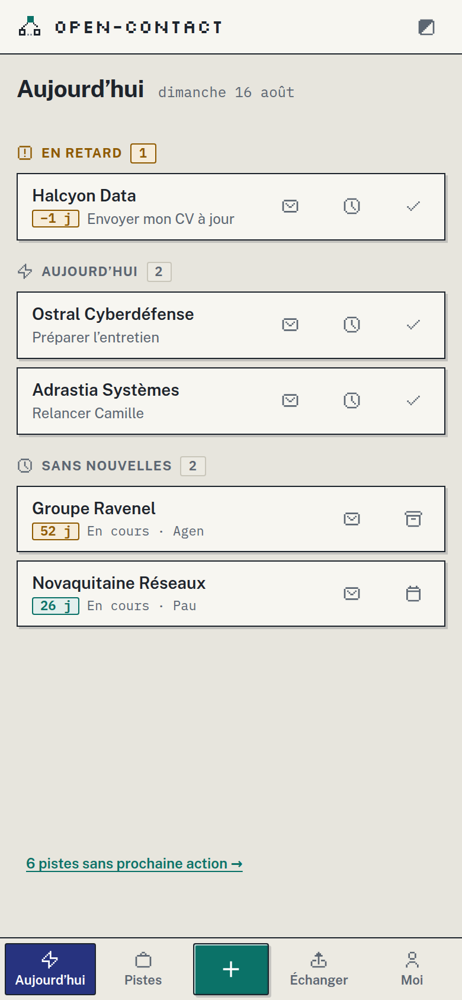
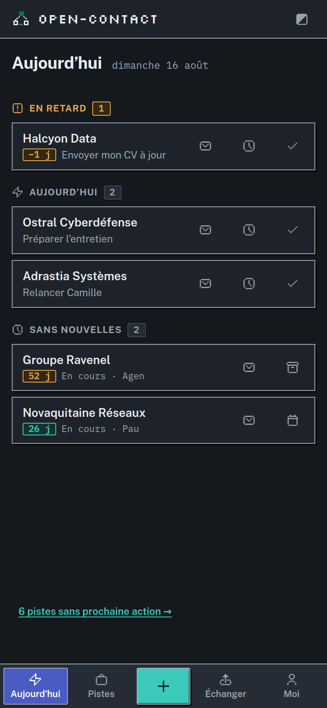
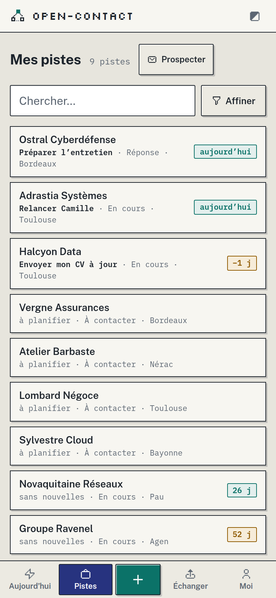
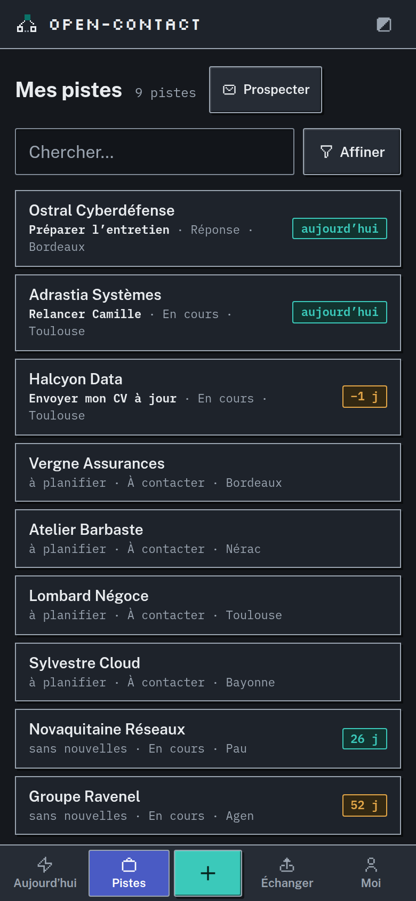

Recherche de stage, d'alternance ou d'emploi
Tu sais où tu as postulé. Sais-tu quoi faire maintenant ?
OpenContact tient le fil de ta recherche et te dit le prochain geste. Et quand un camarade est déjà passé par une entreprise, l'info voyage avec la piste — parce que c'est ça qui décroche un entretien.
Rien à installer · Aucun compte · Tes données restent sur ton appareil
Le problème
Vingt entreprises repérées, et zéro idée de par où reprendre
Trois messages envoyés, deux réponses en attente, une relance oubliée depuis trois semaines. Tout est quelque part — dans un tableur, dans tes mails, dans ta tête.
Un tableur range, il ne pousse pas. Un CRM professionnel est fait pour des commerciaux qui gèrent des comptes, pas pour un étudiant qui cherche une place.
Et pendant ce temps
Ton voisin de classe a fait son stage exactement là où tu postules à froid. Il le sait. Tu ne le sais pas. Et personne n'a d'endroit où le dire.
Ce qui change tout
Une piste portée par quelqu'un vaut treize pistes froides
Une candidature envoyée à froid décroche un entretien dans environ 3 % des cas. La même candidature, portée par quelqu'un qui est déjà dans l'entreprise : environ 40 %.
Une promo entière a déjà fait des stages. Ce réseau existe déjà — il n'est simplement écrit nulle part.
Quand un camarade te donne ses pistes et déclare « j'y suis passé », son prénom voyage avec la piste. L'app te propose alors d'aller lui demander de vive voix : une demande en face aboutit 34 fois plus souvent que par e-mail, et celui qui écrit ne sent aucune différence.
L'application
Quatre écrans, un seul but à chaque fois
Chaque écran pousse vers un geste concret : écrire, relancer, planifier. Jamais vers un formulaire de plus.




Écrire, sans repartir de zéro
Le composeur pose sous tes yeux ce que tu sais de l'entreprise. Une accroche nourrie de recherche fait passer les réponses de ~7 % à ~17 % — encore faut-il ne pas devoir changer d'écran pour aller la chercher.
Partager avec ton groupe
Un QR code, un fichier, ou en direct d'un téléphone à l'autre. Ton suivi privé — statuts, notes, journal — ne part jamais avec.
Rien ne s'écrase
Recevoir des pistes montre toujours un aperçu avant, et laisse une trentaine de secondes pour annuler après. Ce qui existe n'est jamais remplacé en silence.
Tes données
Il n'y a nulle part où les envoyer
Ce n'est pas une promesse, c'est une contrainte d'architecture : il n'existe aucun serveur OpenContact. Tes pistes vivent dans le stockage de ton navigateur.
Quand elles circulent, elles vont directement d'un appareil à l'autre, chiffrées — ou par un fichier que tu transportes toi-même. Ce fichier marche toujours : hors ligne, réseau d'établissement filtré, ou simplement de la main à la main.
Ce qu'OpenContact ne fera jamais
- Aucun serveur, aucun compte, aucune analytique, aucun traçage.
- Aucune publicité, aucune revente ou exploitation de tes données.
- Ton suivi privé ne sort jamais dans un partage.
- Aucune donnée écrasée sans aperçu et sans annulation possible.
- Aucun suivi d'ouverture de tes e-mails.
Où en est le projet
Un produit, trois applications — et une seule existe
Autant le dire franchement plutôt que le laisser découvrir.
-
Livrée
Le web
L'application que tu peux ouvrir maintenant, dans n'importe quel navigateur. Elle s'installe sur l'écran d'accueil d'un téléphone et fonctionne hors ligne. C'est tout ce qui est décrit sur cette page.
-
La prochaine
L'ordinateur
Ce qu'un navigateur ne peut pas garantir : envoyer même application fermée, parler IMAP et SMTP, faire tourner une IA locale. Sa base est écrite et testée, mais elle n'est pas livrée aujourd'hui. Elle s'ouvre après les premiers retours sur le web.
-
Ensuite
Le téléphone
Elle se construira sur la même base que l'ordinateur, avec le même moteur que le web. En attendant, l'application web s'installe déjà depuis le navigateur d'un téléphone et couvre l'essentiel — l'application native apportera la caméra, le partage système et les notifications.
Une capacité absente d'une application n'y apparaît pas. Ni grisée, ni marquée « bientôt » : absente. Tu ne trouveras donc jamais, dans l'application, un bouton qui ne marche pas.
Ça s'ouvre en un clic
Pas de compte à créer, pas d'adresse à donner, rien à installer. Si ça ne te sert pas, tu fermes l'onglet.